The Dark Knight
Main Content
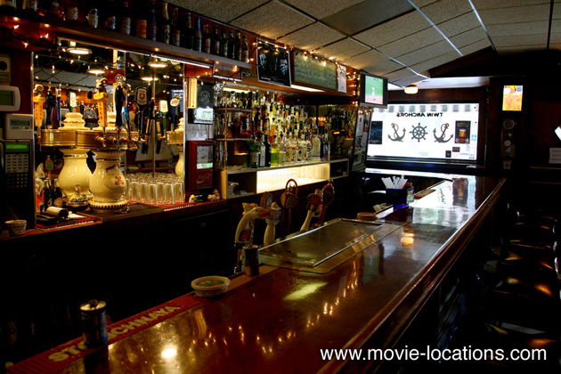
Discover where The Dark Knight (2008) was filmed around Chicago, as well as in London and Bedfordshire in the UK, and briefly in Hong Kong.
The Dark Knight, Christopher Nolan’s follow-up to Batman Begins, expands Batman’s universe with plenty of real locations in Chicago, Hong Kong and London. Memories of Adam West and Cesar Romero’s Sixties hi-jinks are banished completely as the mood shifts from dark to downright grim.
As the tone changes, so ‘Gotham’ morphs from urban Gothic to sinister corporate sheen – and this time it’s mostly Chicago.
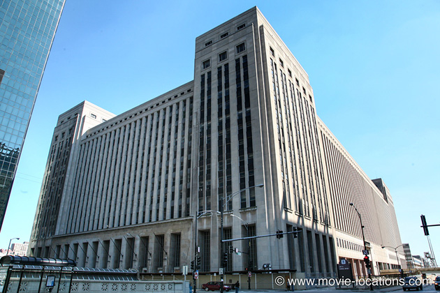
▶ The opening robbery of ‘Gotham National Bank’ by the Joker (Heath Ledger), and his band of disposable clowns, is the old Chicago Post Office, 404 West Harrison – though the exterior seen is the northern corner at West Van Buren Street and Canal Street, where a fake extension was built on the adjoining vacant lot.
The vast and disused building, which also stood in for the exterior of ‘Gotham Police Department’, occupies two city blocks – with the Congress Parkway running straight through the middle. The convoy of school buses, in which the Joker makes his getaway, heads into the city on West Van Buren Street.
The post office building turns up on-screen again, as the ‘Department of Health and Human Services’, the front for the NEST headquarters in Transformers: Dark Of The Moon, a film which shares quite a few Chicago locations with The Dark Knight. ⏏
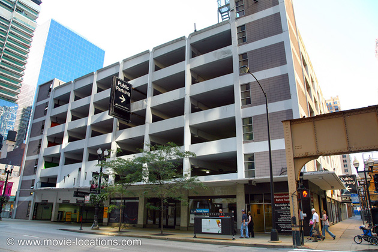
▶ Batman rounds up not just the Scarecrow (a brief, but welcome, return by Cillian Murphy) but a host of other baddies and a few bogus Batmen, too, in the parking garage at 200 West Randolph Street (that’s the same garage which was the start of the Tumbler’s rooftop chase in Batman Begins). ⏏
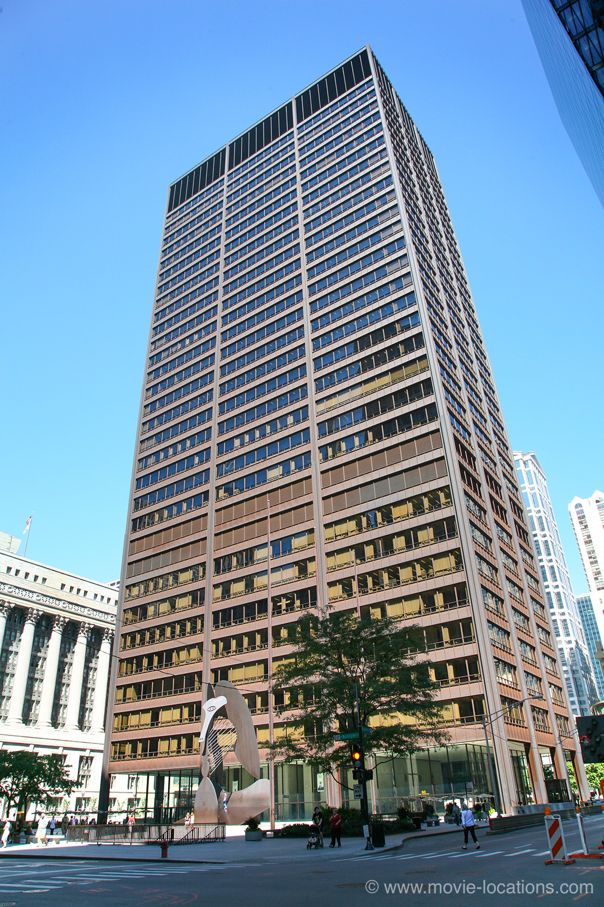
▶ It’s a sign of the change of tone from the previous film that the HQ of ‘Wayne Enterprises’ – which was the old 1930 art deco Chicago Board of Trade Building – is now the 1965 Richard J Daley Center, towering over Daley Plaza on Washington Street between Clark and Dearborn Streets. And, yes, of course, this is the plaza with the Picasso sculpture seen at the climax of The Blues Brothers.
The centre also houses the courtroom in which Harvey Dent (Aaron Eckhart) prosecutes the case against Falcone’s successor, Maroni (Eric Roberts). ⏏
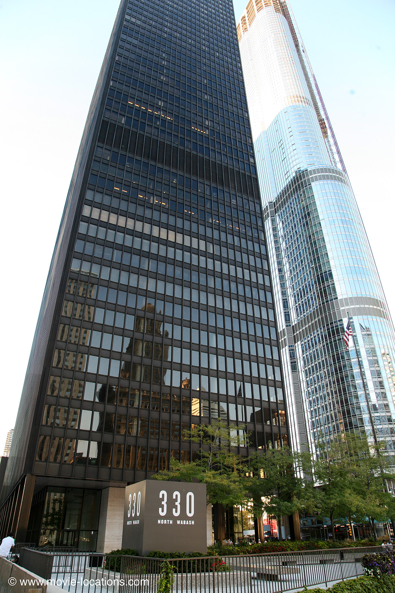
▶ The ‘Wayne Enterprises’ boardroom, though, is in another darkly gleaming monolith, the IBM Building, 330 North Wabash Avenue, a slab of black glass, on the north riverfront between Wabash and State Streets
The final work of architect Mies Van der Rohe – father of the minimalist glass block – the 1971 building supplied multiple locations, including the offices of Harvey Dent, the Mayor and the Police Commissioner. ⏏
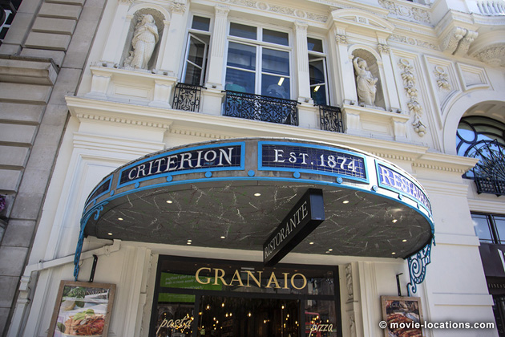
There’s a brief flit across the Atlantic for the restaurant – naturally owned by Bruce Wayne (Christian Bale) – in which the multi-millionaire playboy, with prima ballerina in tow, discovers Rachel Dawes (Maggie Gyllenhaal) dining with Harvey Dent. It’s the venerable Criterion, 224 Piccadilly, W1, on the south side of Piccadilly Circus in the heart of London’s West End.
The 140-year-old institution, where Dr Watson first learns of Sherlock Holmes in Sir Arthur Conan Doyle’s A Study In Scarlet, and where the – real – Suffragettes held meetings over afternoon tea in the 1920s, closed down in 2015. It’s since reopened as Savini At Criterion, an offshoot of one of Milan’s most famous restaurants. The restaurant is also featured on-screen in Ridley Scott’s A Good Year, with Russell Crowe, and in 2010 thriller London Boulevard, with Colin Farrell. ⏏
▶ The vast warehouse of Wayne Enterprises’ ‘Applied Science Division’, where Lucius Fox (Morgan Freeman) takes on the role of Batman’s Q, is the Convention Hall of the West Building, McCormick Place, 2301 South Indiana Avenue, the convention centre complex south of Chicago (Metra: McCormick Place; from Chicago Millennium Station). ⏏
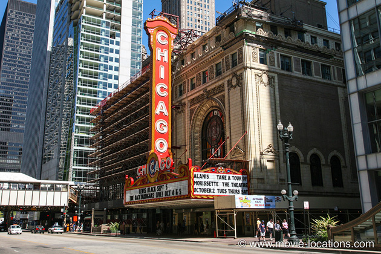
▶ Harvey Dent and Rachel Dawes turn up for an evening at the ballet, only to find the performance cancelled – since Bruce Wayne has taken off on a cruise with the entire corps de ballet. The theatre is naturally the legendary Chicago Theatre, 175 North State Street. The theatre is just about the only glimpse of Chi Town in Oscar-winning musical Chicago, (and even then buried under a mountain of CGI), but see its extravagant lobby as Al Capone’s hotel in Brian de Palma’s The Untouchables. ⏏
Next, to Hong Kong for the meeting with crooked financial magnate Lau, at the IFC2 Building (2 International Finance Centre), 8 Finance Street; at 415m and 88 floors, it’s the tallest building in the city.
▶ Acting on Lau’s information, Lt Gordon (Gary Oldman) is finally able to arrest Maroni as he’s enjoying a meal in marvelously oak-panelled The Berghoff, 17 West Adams Street between Dearborn and State Streets (CTA: Jackson or Monroe Stations; Blue and Red Lines)
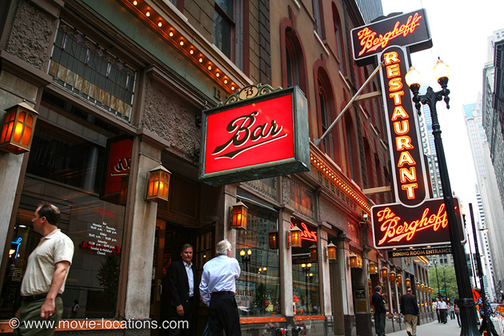
Having occupied this site since 1905, the historic German restaurant is housed in one of the first buildings constructed in the Loop after the disastrous Chicago fire, and one of the city’s few remaining buildings boasting a cast-iron façade. After briefly closing in 2006, it’s reopened with a smart revamp and an expanded menu. ⏏
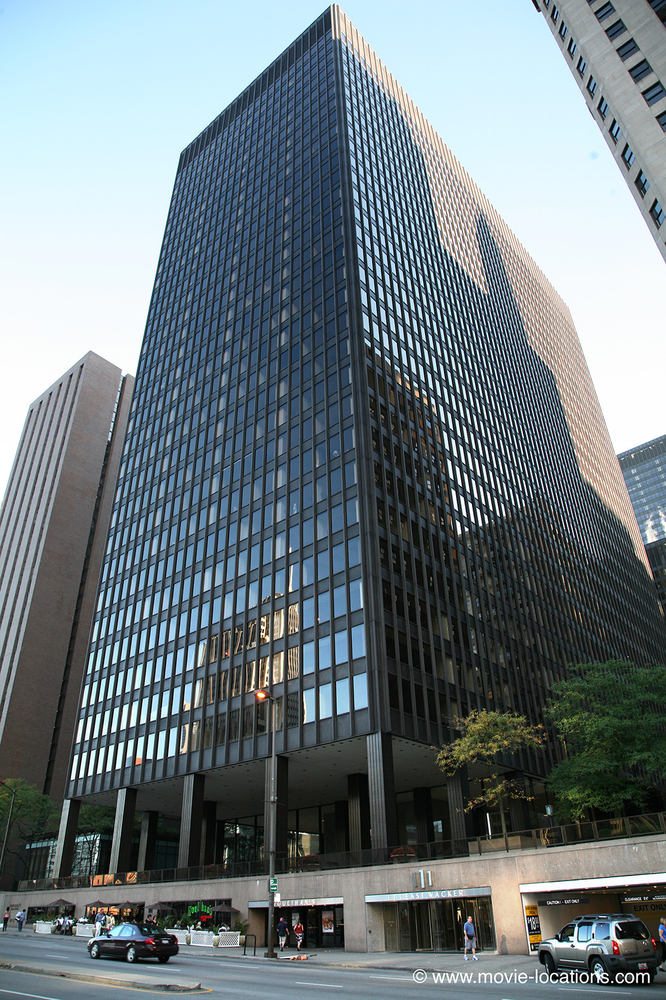
▶ The fundraiser for Harvey Dent – “Any psychotic ex-boyfriends I should know about?” – crashed by the Joker, is held at Building 2 of Illinois Center Buildings, 111 East Wacker Drive – a complex of five office buildings and a couple of hotels, connected by an enclosed concourse lined with shops and restaurants (and another design by Mies van der Rohe), overlooking the Chicago River near the foot of the Michigan Avenue Bridge.
As there is no ‘Wayne Manor’ (it’s being rebuilt after the fire – remember?), the lobby of One Illinois Center, part of the same complex, was transformed into the main living area of Bruce Wayne’s glitzy new penthouse. The lobby was surrounded by green screens so that views over the city could be digitally added later. ⏏
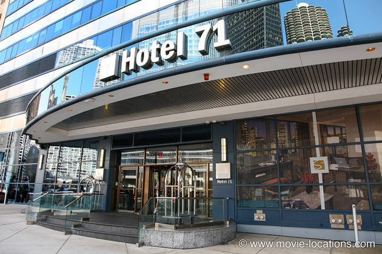
▶ Those views (over the Chicago River to the unmistakable twin ‘corncobs’ of Marina City) are from the the 39th floor of the 40-story Wyndham Grand (formerly Hotel 71), 71 East Wacker Drive, which is where the bedroom of Wayne’s penthouse was filmed. ⏏
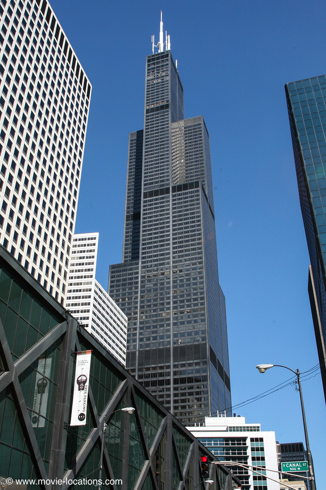
▶ Gone are the decorative towers of the old Jewelers Building, from which the caped crusader surveyed the city in Batman Begins. The Dark Knight now looks down from the severe black slab of Willis Tower, 233 South Wacker Drive – better known by its former name of Sears Tower – occupying the block surrounded by Franklin Street and Wacker Drive, Adams Street and Jackson Boulevard. The tower moved from ‘Gotham City’ to ‘Metropolis’ to supply the interior of the ‘Daily Planet’ office in Man Of Steel, but was back in Chicago in time to provide a safe mooring for the alien craft in Transformers: Age Of Extinction.
You can’t perch atop the building but – if you’ve seen Ferris Bueller’s Day Off – you’ll know that you can get fantastic views of Chicago from the Skydeck, 1353 feet above the city (entrance on Jackson Boulevard between South Wacker Drive and Franklin Street (CTA: Quincy Station). ⏏

▶ And once again, as in Batman Begins, the first floor offices of the The Farmiloe Building, 28-36 St John Street, Clerkenwell, in London, were transformed into ‘Gotham City Police Station’. The Farmiloe is also used in The Dark Knight Rises, Christopher Nolan’s Inception and in David Cronenberg’s Eastern Promises. ⏏
After mayhem at the memorial for the murdered police commissioner, the disco in which Batman pummels customers to get to Maroni is the huge (as in nine bars and a 4,000-square-foot dancefloor) Sound Bar, 226 West Ontario Street, at North Franklin Street (CTA: Chicago Station, Brown Line).
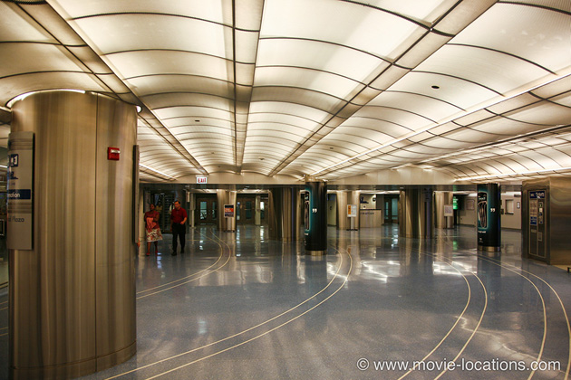
▶ And the sinuously curving passageways of the newly remodelled entrance to the Metra station at Millennium Park itself were used for the emergence of the Batpod from the bowels of Lower Wacker Drive as Batman tracks down the Joker. ⏏
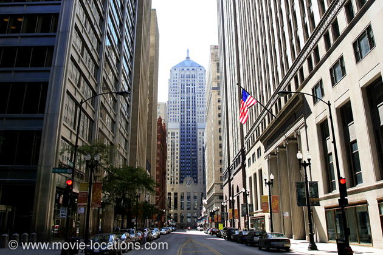
▶ The memorial service for the slain Police Commissioner, and the first confrontation between Batman and the Joker both take place on South La Salle Street, with its vista leading down to the Chicago Board of Trade Building (which was the HQ of ‘Wayne Enterprises’ in Batman Begins).
And that’s no CGI effect – the production really did flip over an 18-wheel truck in the heart of Chicago’s prestigious financial district, after extensive tests to ensure the stunt wouldn’t cause structural damage. The iconic view down the LaSalle Street Canyon is also seen in Brian De Palma’s The Untouchables and gets seriously trashed by Decepticons in Michael Bay’s Transformers: Dark Of The Moon. ⏏
The huge explosion, which – well, no spoilers – marks a major turn in the story was filmed at London’s long-deserted Battersea Power Station, on the south bank of the Thames. While its sister station, Bankside, has found enormous success as the Tate Modern gallery, the previously more famous Battersea stands an empty shell – though that’s allowed it to be a frequent film location – seen in Richard III, 1984 and more recently, Guy Ritchie’s Rocknrolla and Terry Gilliam’s The Imaginarium Of Dr Parnassus.
While locals whose houses overlooked the site held balcony parties to watch the spectacular explosion, the advance warning didn’t seem to have reached everyone. Emergency services were flooded with panicked calls reporting a terrorist attack on the beloved landmark. ⏏
▶ ‘Gotham General Hospital’, blown up by the Joker, was the old Brach's Candy factory, which stood at 401 North Cicero Avenue. If you’ve seen its demolition on YouTube, you’ll know that it’s no longer there. ⏏
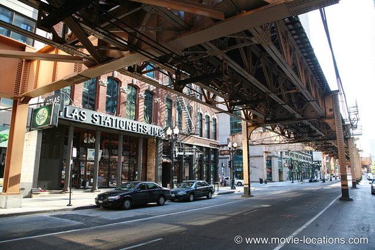
▶ With the Tumbler out of the question, Bruce Wayne takes to the streets in his Lamborghini (demonstrating supreme confidence in the film, the car company provided the production with three cars – one of which was trashed). Several blocks of Lake Street, which runs east-west a block south of West Wacker Drive, from Upper Wacker Drive to State Street, were closed down for the scene.
A straight run, beneath the photogenic ‘el’ tracks, you can see the same stretch of road used for the chase with James MacAvoy and Angelina Jolie in Wanted. ⏏
▶ The bar, in which Harvey Dent/Two Face turns up to have a word with corrupt Detective Wuertz, after his nasty accident, is – appropriately – the Twin Anchors, 1665 North Sedgwick Street in Chicago’s Old Town. Check out the scars left on the bar top after repeated takes for the scene – what on earth was cut from the final film?
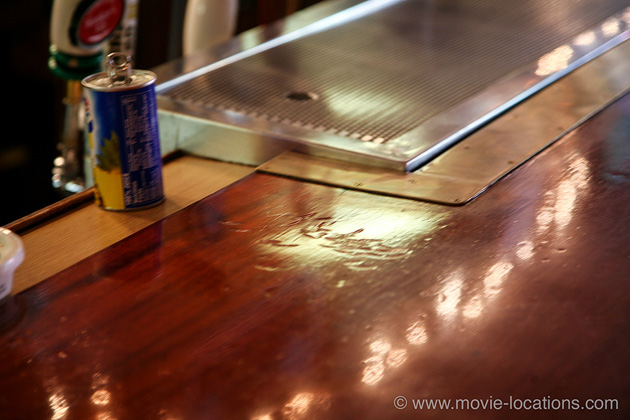
Founded in 1932, it’s one of the oldest restaurant/bars in the city, and was a favourite of Frank Sinatra when he was in town. ⏏
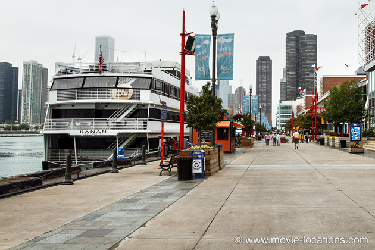
▶ As the Joker wreaks havoc throughout the city, the evacuation of panicky Gothamites onto ferries is at Navy Pier, east of the Streeterville district. This 3,000 foot pier, built in 1916 when Lake Michigan was used for commercial shipping, fell into decline, until major renovations in 1976. The pier entrance is on Streeter Drive at 600 East Grand Avenue near lake Shore Drive just north of the Chicago River. It previously featured as an ‘Atlantic City’ location in Martin Scorsese’s The Color of Money and more recently in Divergent. ⏏
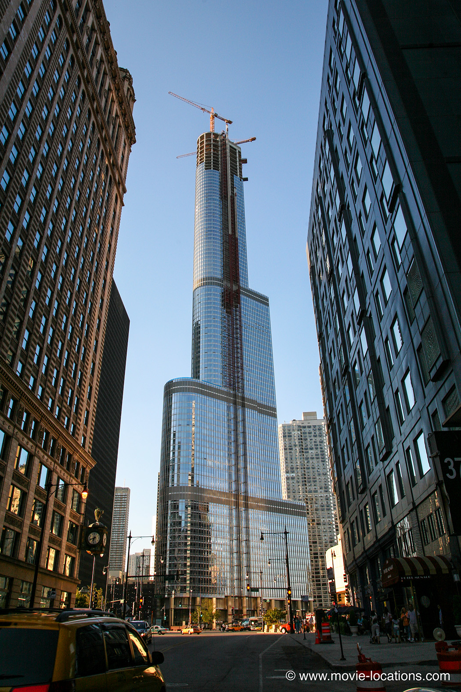
▶ The climactic hand-to-hand face-off between Batman and the Joker is a conflation of two separate locations: the exterior is Chicago's Trump Tower, 401 North Wabash Avenue, which was under construction during filming. The completed tower, incidentally, is home to villainous Dylan Gould (Patrick Dempsey) in Transformers: Dark Of The Moon. ⏏
For the actual fight, the interior was re-created in England, in Shed 2, one of the two gigantic airship hangars at Cardington, a couple of miles southeast of Bedford in Bedfordshire (rail: Bedford, from London Euston or King’s Cross), now converted into a soundstage (part of Batman Begins was also filmed here).
The completed Trump Tower, by the way, is used as the penthouse of villainous Dylan Gould in Transformers: Dark Of The Moon.
Visit Info
Visit The Film Locations
Illinois | Chicago
Visit: Chicago
Flights: O’Hare International Airport, 10000 West O'Hare Ave, Chicago, IL 60666 (tel: 800.832.6352)
Travel around: Chicago Transit Authority
Visit: the Navy Pier, 600 East Grand Avenue, Chicago, IL 60611 (tel: 312.595.7437)
Stay at: the Wyndham Grand, East Upper Wacker Drive, Chicago, IL 60601 (tel: 312.346.7100)
Visit: the Chicago Theatre, 175 North State Street, Chicago, IL 60601 (tel: 800.745.3000)
Visit: The Berghoff, 17 West Adams Street, Chicago, IL 60603 (tel: 312.427.3170)
Drink at: the Twin Anchors Restaurant, 1665 North Sedgwick Street, Old Town, Chicago, IL 60614 (tel: 312.266.1616)
Visit: the Sound Bar, 226 West Ontario Street, Chicago, IL 60654 (tel: 312.787.4480) (CTA: Chicago Station, Brown Line)
Visit: the Willis Tower, 233 South Wacker Drive, Chicago, IL 60606
Visit: McCormick Place, 2301 South Lake Shore Drive, Chicago, IL 60616 (Metra: McCormick Place; from Chicago Millennium Station)
UK | London
Flights: Heathrow Airport; Gatwick Airport
Visit: London
Travelling: Transport For London
Dine at: Savini At Criterion, 224 Piccadilly, London W1J 9HP (tube: Piccadilly, Piccadilly Line)
Bedfordshire
Visit: Bedfordshire
China
Visit: China
Visit: Hong Kong
Flights: Hong Kong International Airport, 1 Sky Plaza Road, Hong Kong (tel: 852.2181.8888)